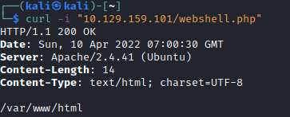
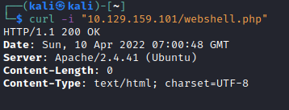

Web Server Configuration
Web Server Configuration
To reduce the impact of file inclusion vulnerabilities in case they occur:
• globally disable the inclusion of remote files.
◇ PHP (php.ini file)
▪
allow_url_fopen=Off ▪
allow_url_include=Off• Lock the web application to its web root directory, preventing it from accessing non-web related files.
◇ run the application within Docker
◇ PHP (php.ini file)
▪
open_basedir=/var/www• Disable execution of risky commands
1) create a webshell
nano /var/www/html/webshell
2) Curl to check that is working
 3) Disable the risky functions in php.ini, find the parameter “disable_functions” (to that in nano CTRL+w)
disable_functions =exec,passthru,shell_exec,system,proc_open,popen,curl_exec,curl_multi_exec,parse_ini_file,show_source
4) Restart Apache
5) Retry to request the page, you should see that the php now is not been executed
 6) To check the error log
cat /var/log/apache2/error.log